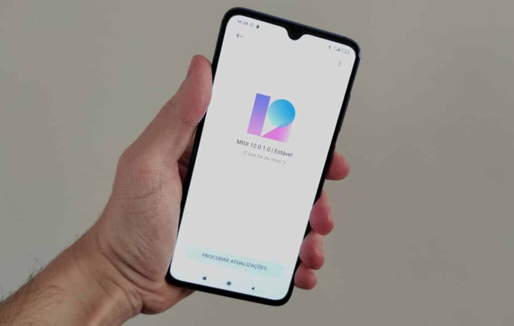
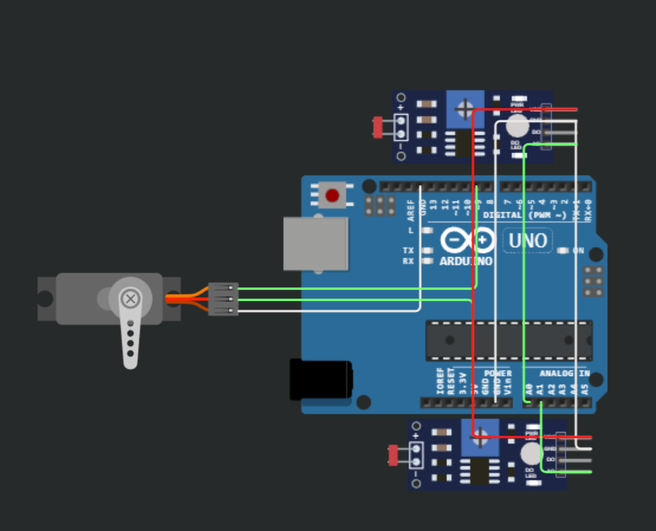

Fundamentos de Sistemas Ciberfísicos
Sobre a disciplina
Esta disciplina, dirigida a acadêmicos de 1º período dos cursos de Bacharelado em Sistemas de Informação (BSI), Bacharelado em Ciência da
Computação (BCC), Bacharelado em Engenharia de Software (BES) e Bacharelado em Cibersegurança (BCS), tem por referência o estudo de
módulos microprocessados, mecanismos de comunicação e serviços em nuvem aplicados à Sistemas Ciber-Físicos e Internet das Coisas (IoT -
Internet of Things). Nela, os estudantes aprendem a relacionar arquiteturas, redes, sistemas operacionais e nuvem computacional. Ao final da
disciplina, são capazes de solucionar problemas estruturados integrando adequadamente configurações de hardware e software aplicados ao mundo
físico. Orientador(a): Andrey Cabral
Projetos
-
ESTUDO SOBRE SISTEMAS OPERACIONAIS
Desenvolvimento de um relatório acadêmico e apresentação do sistema operacional MIUI.

-
PROJETO SMART CITIES
Projeto com foco em integração de hardware e software, para solucionar problemas na sociedade.
No nosso caso, paineis solares que giram com base na quantidade de lumens.
